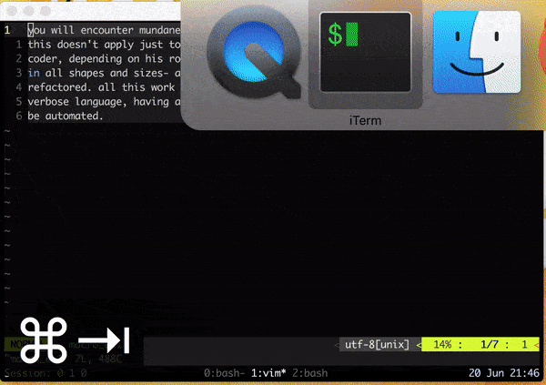
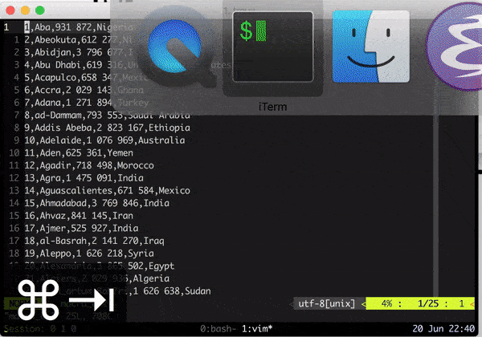
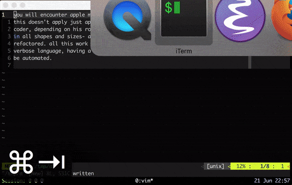

Vim: Macro
This is part 9 of a series of tutorial to Vim. You can read Part 8 here.
Grunt Work
If you are reading this series from the very beginning, you have read about several ways to navigate, couple of modes which help in multiplexing keys, bunch of commands and VimL scripting language, which is, as mentioned before, a fully fledged programming language. After reading all this, one might think, these features of Vim are neat but not really extraordinary. One can still do things without these features, albeit slowly. But the things I'll show today and in next couple of installments are very difficult, if not impossible, to do without these fundamental Vim operations.
You will encounter mundane, repetitive, silly work while working with text. And this doesn't apply just to code developers, it may be possible that a non coder, depending on his role, may in fact face more grunt work. This work comes in all shapes and sizes- a misaligned csv file, a database dump or a code to be refactored. All this work can be and should be automated. Writing code using a verbose language, having a huge boiler plate code, is also grunt work which must be automated.
Lesson 10
Everything that can be automated, should be automated.
Macro
A macro (short for "macroinstruction", from Greek μακρός 'long') in computer science is a rule or pattern that specifies how a certain input sequence (often a sequence of characters) should be mapped to a replacement output sequence (also often a sequence of characters) according to a defined procedure.
-Wiki
Here we'll see keyboard macros: you type in a few keystrokes and computer will type a lot for you based on what you taught it. A small example will illustrate this better, but before we get to the example, let me introduce to you another handy operator.
~ (Tilde)
~ will toggle the case of character below cursor. Can be very handy while writing
camel case variable names.
title-lize
Suppose we are given a prose like this:
you will encounter mundane, repetitive, silly work while working with text. and this doesn't apply just to code developers, it may be possible that a non coder, depending on his role, may in fact face more grunt work. this work comes in all shapes and sizes- a misaligned csv file, a database dump or a code to be refactored. all this work can be and should be automated. writing code using a verbose language, having a huge boiler plate code, is also grunt work which must be automated.
And you are asked to correct the case–the first character after a '.' should be uppercase and rest lower case. Pretty boring but important task. Let's try to automate it.
Using substitute
One way is to use substitute. We can capture the next character, using .,
after a '.' and make it uppercase. You can pass in \L to make a character
lower case and \U to make it upper case in substitute:
:%s/\. \(.\)/. \U\1/g
- the pattern
\.will match literal '.' \(.\)will match and capture any character.
Now Recording
There's another way, the way of macros. We'll record how to title-lize one instance and run that macro repeatedly.
- Use
q, followed by any keyatozto start recording.- here the key which is used to record the macro will hold the macro. These are called as registers. Registers can store much more than macros, we'll see more about them in later parts.
- say we use
t.
- Press
/\.to search for next instance of\.(again, '\.' will match literal '.' fullstop, we need to escape it to differentiate from regex wild card.) wto jump to start of next word.~to toggle the case, in this case, it will make it uppercase.- Hit
qagain to stop recording. @tto play the macro.
Figure 1: Macro for titlelizing the paragraph, view bigger here
- You can execute macro stored in
t100 number of times using100@t - You can also execute last macro again using
@@.
One more time
Let's consider one more example where macros can prove very handy. Say we have a 25 line csv file and we want to combine 2nd and 4th column.
1,Aba,931 872,Nigeria 2,Abeokuta,612 277,Nigeria 3,Abidjan,3 796 677,Ivory Coast 4,Abu Dhabi,619 316,United Arab Emirates 5,Acapulco,658 347,Mexico 6,Accra,2 029 143,Ghana 7,Adana,1 271 894,Turkey 8,ad-Dammam,793 553,Saudi Arabia 9,Addis Abeba,2 823 167,Ethiopia 10,Adelaide,1 076 969,Australia 11,Aden,625 361,Yemen 12,Agadir,718 498,Morocco 13,Agra,1 475 091,India 14,Aguascalientes,671 584,Mexico 15,Ahmadabad,3 769 846,India 16,Ahvaz,841 145,Iran 17,Ajmer,525 927,India 18,al-Basrah,2 141 270,Iraq 19,Aleppo,1 626 218,Syria 20,Alexandria,3 865 502,Egypt 21,Algiers,2 029 936,Algeria 22,al-H_artum Bah?ri,1 626 638,Sudan 23,al-H?udaydah,677 315,Yemen 24,Aligarh,775 694,India 25,Allahabad,1 094 199,India
One way of doing it would be:
qtto start recording macro in registert.- With cursor on line 1, column 1, press
3f,to jump to last column of csv file. wto read first characterd$to delete till end of linedwwould have worked if the country name were single word. (dwwon't work for Saudi Arabia)
0to get to start of line2f,to get to end of 2nd columnito get to insert mode<space><esc>to get into normal mode.pto paste the fourth column.$to goto end of linexto delete the trailing ','- and finally
jor<down arrow>to come to next line 0to reset position to 0th column in new lineqto stop recording24@tto play the macro 24 times.
Figure 2: Macro for merging csv column, view bigger here
- This is not the most efficient way of doing it, but this illustrates that you can record everything in a macro: right from every motion command to changing modes.
- In fact, you can have nested macros that is, while recording a macro you can summon another macro.
Achievement Unlocked: Sublime
And thus, within 9 parts you have reached a sublime level. You are now slowly , without noticing, becoming a power user of Vim. All the basic operations which you perform daily must have been already covered. Macros in Vim are one the most powerful features which you will encounter in any editor, partly because of the extensive keyboard mappings available in Vim. We won't stop here, in next parts we will cover more features which will demonstrate why Vim is not your average text editor.
One more thing: . (Repeat Command)
Repeat command is similar to macro, in the sense that it repeats the last change
when . is pressed. It's like every change is stored in . register as a macro.
. command can be used as light weight macro. But . can capture only simple
changes. I have experienced that it captures all the keystrokes in insert mode,
but as soon as we have one keystroke in normal mode, it stops recording.
To demonstrate this, let's do slightly changed version of title-lize example,
this time we want to change 'apple' to 'orange'. While this can be easily done
using substitute command, using , and n can make it more iterative and require
less typing. But before we get to actual example, let me introduce to one more
way of switching to insert mode.
c
c takes in motion key, like w or $, deletes the range specified and puts
us into insert mode. It is essentially combination of d and i. You can remember
it by thinking of it as change command.
Now we can come back to out apple to orange example:
- Without recording keystrokes, directly search for 'apple'
- hit
cwto change the word - type in 'orange'
<esc>to return to normal modenow you can hit
nto jump to next instance of 'apple', followed by.to repeat the last change.
Figure 3:
.(repeat command) in action
Summary
| Command | Comment |
|---|---|
c<motion command> |
change (d + i): deletes given range and puts into insert mode |
q<register> |
start recording macro in register specified |
q |
stop recording macro |
@<register> |
play macro store in specified register |
@@ |
play last played macro |
. |
Repeat last change |
~ |
toggle the case of the character below cursor |